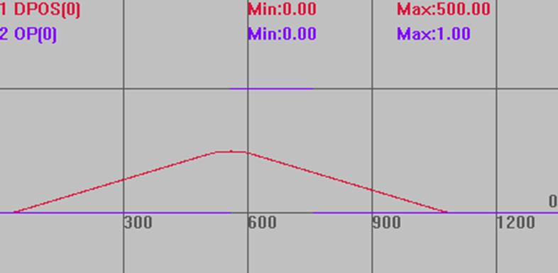

|
类型 |
特殊运动指令 |
|
描述 |
BASE轴运动缓冲加入一个输出口操作，指定时间后输出状态翻转。
这个指令LOAD执行时不做任何运动，只操作输出口。 单个轴同一时间只支持一个脉冲输出，第二个MOVE_OP2指令会自动关闭前面指令的脉冲。 |
|
语法 |
MOVE_OP2(ionum,state,offtimems) ionum：输出编号，从0开始 state：输出状态 offtimems：多少ms时间后翻转，以产生脉冲输出的效果 |
|
适用控制器 |
通用 |
|
例子 |
UNITS=100 DPOS=0 SPEED=200 ACCEL=1000 DECEL=1000 OP(0,OFF) '关闭OUT0口 TRIGGER '自动触发示波器 MOVE_OP2 (0,ON,1000) '等待上条运动完成，输出口0输出一个1s的脉冲，脉冲时间不会阻碍下一条运动执行 MOVE(-500)
轨迹曲线 DPOS(0)垂直刻度1000 OP(0)垂直刻度1  |
|
相关指令 |